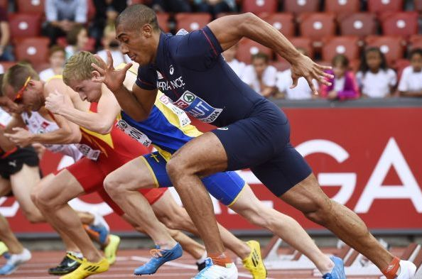

Left
Lari Jarak Pendek
Middle
Lari jarak pendek atau yang sering disebut dengan lari sprint ialah jenis lari dengan jarak tempuh antara 100 meter hingga 400 meter. Dalam perlombaan, lari jarak pendek ini sering dikelompokkan menjadi tiga nomor, yaitu lari dengan jarak 100 meter, 200 meter, dan 400 meter.

Lari jarak pendek berbeda dengan lari marathon, jenis lari jarak pendek lebih mendorong kamu untuk memaksimalkan kecepatan, alih-alih mengatur keseimbangan antara ritme lari dan stamina. Hal ini dikarenakan pada lari jarak pendek, kamu dituntut untuk bisa mengerahkan kecepatan lari kamu yang maksimal dari garis awal hingga finish.
Right
Mau tahu lebih banyak tentang ketiga teknik lari jarak pendek yang paling mendasar?
Artikel Lari Jarak Pendek Lainnya